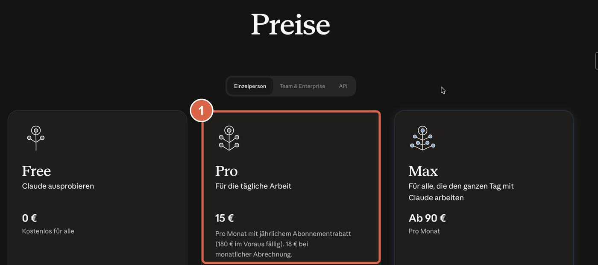
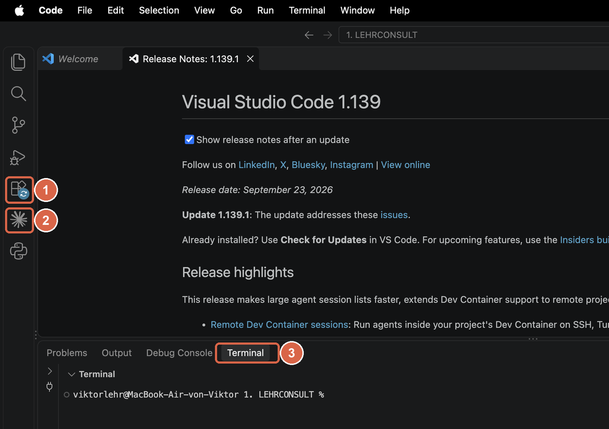
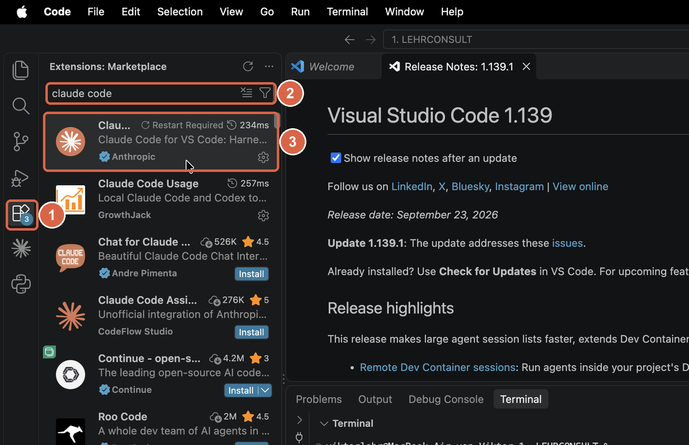
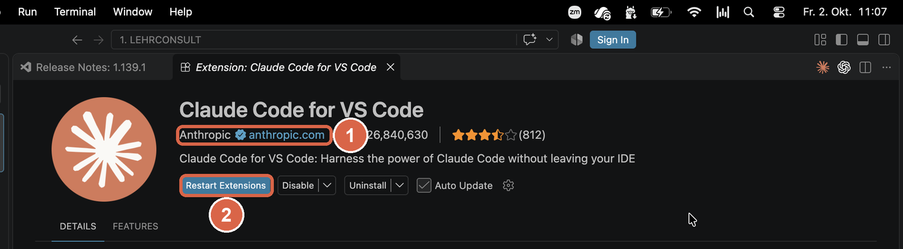
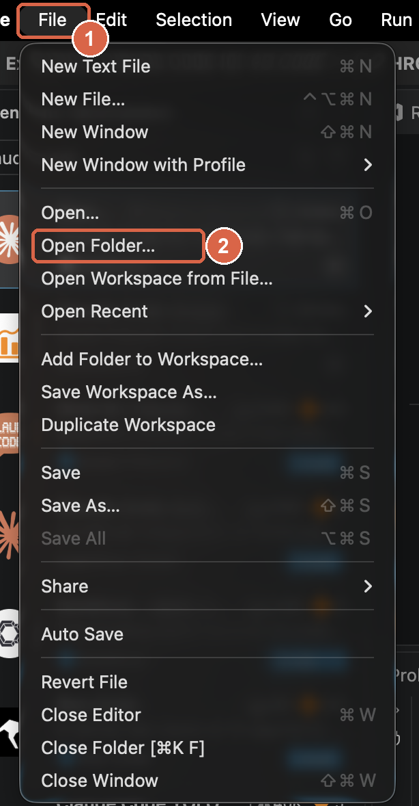
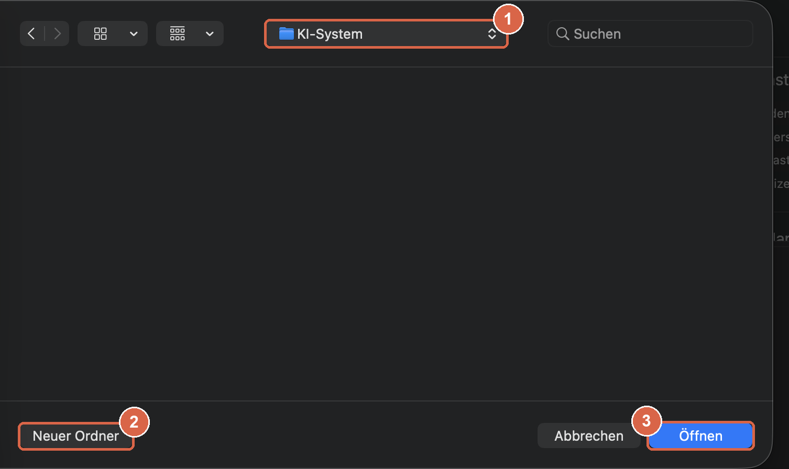
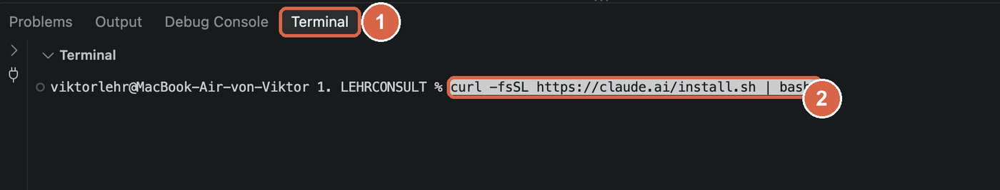

Dein Claude-Setup, {{KUNDE}}
Im Chat mit Claude fängst du jedes Mal von vorn an: erklären, wer du bist, was du anbietest, wie du schreibst. Ab jetzt geht das anders. Claude arbeitet direkt in einem Ordner auf deinem Rechner. Dort liegt, wer du bist, woran du baust und wie du arbeitest, und Claude liest es bei jedem Start von selbst mit. Du erklärst dich einmal, danach nicht mehr.
Der wichtigste Satz vorweg: Wenn du nicht weiterweißt, frag Claude selbst. Er wird nie ungeduldig, und durch eine Frage kannst du nichts kaputt machen. Zum Beispiel: „Erklär mir das bitte so, als hätte ich das noch nie gemacht.“
{{N}} · Wofür wir das machen
{{WOFUER_EINSTIEG}}
Das Setup gibt Claude eine feste Zentrale auf deinem Rechner. Dort steht einmal sauber aufgeschrieben, wer du bist, was du anbietest und wie du klingst. Von dort aus arbeitet Claude bei jeder Aufgabe.
- Du erklärst dich nur einmal. Angebot, Zielgruppe und deine Regeln stehen im Handbuch. Jede Sitzung startet mit diesem Wissen, egal ob es um {{BEISPIEL_AUFGABEN}} geht.
- Deine Ideen gehen nicht mehr verloren. Was dir unterwegs einfällt, landet im Eingangskorb und wird später einsortiert. So wächst ein Vorrat, auf den Claude bei jeder Aufgabe zurückgreift.
- Ergebnisse liegen als Dateien bei dir. Texte, Listen und Unterlagen liegen sortiert in deinem Ordner. Du suchst nichts mehr in alten Chatverläufen.
- Das Wissen gehört dir. Alles liegt auf deiner Festplatte und hängt an keinem Konto. Wechselst du einmal das Werkzeug, nimmst du den Ordner einfach mit.
Die Zeit heute ist die Investition. Danach fängst du bei keiner Aufgabe mehr bei null an, und dein System weiß jede Woche ein Stück mehr über deine Arbeit.
Dein System auf einen Blick
Stell dir vor, du stellst gerade eine Mitarbeiterin ein. Sie braucht einen Arbeitsplatz, ein Handbuch und ein Gedächtnis. Genau das bauen wir: drei Bausteine in einem Ordner, und Claude nutzt alle drei bei jeder Aufgabe automatisch.
Das Handbuch
Briefing · entsteht im InterviewWer du bist, für wen du arbeitest, wie Claude arbeiten soll. Claude liest es bei jedem Start.
Das Notizbuch
Gedächtnis · Claude schreibt esWas Claude nebenbei lernt. Das eingebaute Auto-Memory sammelt es im Ordner memory neben deinem Second Brain. Sachwissen daraus wandert mit /verarbeiten in den Aktenschrank, im Notizbuch bleiben deine Vorlieben und ein Verweis. Dort kannst du jederzeit nachlesen, was Claude sich gemerkt hat.
Der Aktenschrank
Second Brain · dein FachwissenDeine Angebote, Abläufe, Vorlagen. Jede Aussage mit Quellverweis, nichts wird erfunden.
Der Chat beantwortet Fragen. Dieses System erledigt Arbeit und wird dabei jede Woche besser.
{{N}} · Die Schritte
Die ersten Schritte kannst du schon vor der Session erledigen, wenn du magst. Wenn nicht, machen wir sie gemeinsam.
Wähl jetzt dein Betriebssystem, dann passt sich die Anleitung automatisch an.
Dein Claude-Konto braucht einen Bezahlplan
Für Claude Code reicht das kostenlose Konto nicht, mit ihm lässt es sich nicht anmelden.
- Melde dich auf claude.ai an und schau unter Einstellungen nach, welchen Plan du hast.
- Steht dort Free: auf den Pro-Plan wechseln. Der ist der richtige Einstieg. Chat und Claude Code teilen sich sein Kontingent, an einem sehr intensiven Tag kann es also knapp werden. Dann hilft eine Pause.

VS Code installieren
VS Code ist das kostenlose Programm, in dem Claude Code läuft. Stell es dir als Arbeitsplatz vor.
- Download: code.visualstudio.com/download, dort den blauen Windows-Button klicken.
- Die heruntergeladene Datei ausführen und den Installer mit den Standardeinstellungen durchklicken.
- VS Code starten. Die Willkommens-Tour kannst du schließen.
- Gleich jetzt: Rechtsklick auf das VS-Code-Symbol unten in der Taskleiste, dann An Taskleiste anheften. So findest du das Programm immer wieder.
- Download: code.visualstudio.com/download, dort den Mac-Button klicken.
- Die ZIP-Datei im Downloads-Ordner doppelklicken, dann das Programm Visual Studio Code in den Ordner Programme ziehen.
- VS Code starten. Die Willkommens-Tour kannst du schließen.
- Gleich jetzt: Rechtsklick auf das VS-Code-Symbol unten im Dock, dann Optionen > Im Dock behalten. So findest du das Programm immer wieder.
So sieht VS Code aus, wenn es offen ist. Die drei markierten Stellen brauchst du in den nächsten Schritten:

Warum das mit dem Dock wichtig ist: Die Spotlight-Suche (Cmd + Leertaste) findet ein frisch installiertes Programm oft noch nicht und zeigt dann nur Treffer aus dem Internet. Wenn du VS Code trotzdem einmal suchst: Finder öffnen > links unter Favoriten auf Programme > in der Liste zu Visual Studio Code.
Claude-Code-Erweiterung installieren
- In VS Code links auf das Erweiterungen-Symbol klicken (vier kleine Quadrate).
- Oben ins Suchfeld
Claude Codeeintippen. - Den Eintrag von Anthropic auswählen und auf Install klicken. (Direktlink: Claude Code im Marketplace)


Arbeitsordner anlegen und öffnen
- Leg einen neuen Ordner mit dem Namen KI-System an, zum Beispiel in deinen Dokumentenauf dem Schreibtisch.
- In VS Code: Datei > Ordner öffnenFile > Open Folder (bzw. Ablage > Ordner öffnen) und den Ordner KI-System auswählen.
- Wenn VS Code fragt, ob du den Autoren vertraust: Ja, ich vertraue den Autoren. Es ist dein eigener Ordner.


Merksatz: Ab jetzt immer genau diesen Ordner öffnen. Dein Second Brain und Claudes Gedächtnis liegen in diesem Ordner. Wer jedes Mal woanders arbeitet, fängt jedes Mal bei null an.
Claude einmal im Terminal einrichten
Die Erweiterung bringt Claude für das Chat-Fenster mit. Das Terminal, also das Fenster für Textbefehle, kennt Claude danach noch nicht. Ein paar Dinge richtest du nur dort ein, zum Beispiel Zusatzprogramme (Plugins) oder die Verbindung zu anderen Programmen. Deshalb machen wir das einmal jetzt, danach brauchst du das Terminal kaum noch.
- In VS Code oben im Menü auf Terminal > New Terminal klicken. Unten öffnet sich ein Bereich mit einer blinkenden Zeile.
- Kopier diesen Befehl, füg ihn dort ein (Cmd + V) (Strg + V) und drück Enter:
curl -fsSL https://claude.ai/install.sh | bash
irm https://claude.ai/install.ps1 | iexDie Installation dauert ein, zwei Minuten. Warte, bis wieder eine leere Zeile mit blinkendem Strich erscheint.
Der wichtigste Moment in diesem Schritt: Am Ende steht oft ein Hinweis, dass ein Ordner „not in your PATH“ ist, und darunter ein Befehl. Kopier genau diesen Befehl, füg ihn ein und drück Enter. Ohne ihn findet dein Rechner Claude im Terminal nicht, obwohl es installiert ist.
Auf dem Mac sieht er so aus:
echo 'export PATH="$HOME/.local/bin:$PATH"' >> ~/.zshrc && source ~/.zshrcUnter Windows nimmst du diese zwei Zeilen, aber nur, wenn der Hinweis erscheint:
$currentPath = [Environment]::GetEnvironmentVariable('PATH', 'User')
[Environment]::SetEnvironmentVariable('PATH', "$currentPath;$env:USERPROFILE\.local\bin", 'User')- Schließ das Terminal über das Mülleimer-Symbol rechts oben im Terminal-Bereich und öffne über Terminal > New Terminal ein neues.
- Tipp
claude --versionund drück Enter. Erscheint eine Versionsnummer, hat alles geklappt. Steht dort „command not found“, fehlt der Befehl aus dem Kasten. - Tipp jetzt
claudeund drück Enter. Du bewegst dich mit den Pfeiltasten und bestätigst mit Enter:- Farbe: hell oder dunkel, ganz wie du magst
- Anmeldung: Claude account with subscription, der Browser öffnet sich kurz
- Ordner: Yes, I trust this folder
- Kommt eine Frage nach Chrome: No, not now
- Fliegst du dabei aus Versehen raus, tipp einfach noch einmal
claude. - Zum Schluss
/exiteintippen und das Terminal schließen. Ab hier arbeitest du wieder im Chat-Fenster.
Die Setup-Datei in den Ordner legen
- Lade die Datei herunter: setup-{{KUNDE}}.md herunterladen
- Verschieb sie aus dem Downloads-Ordner in deinen Ordner KI-System.
- Falls der Klick die Datei nur im Browser anzeigt: Rechtsklick auf den Button, dann „Link speichern unter“„Verknüpfte Datei laden unter“ wählen.
- Hast du sie zweimal heruntergeladen, heißt die zweite Kopie
setup-{{KUNDE}} (1).md. Lösch dann die ältere, damit nur eine im Ordner liegt.
In dieser Datei steckt die komplette Bauanleitung für dein System. Claude arbeitet sie Schritt für Schritt ab, du beantwortest Fragen und gibst frei.
Claude starten und den Einzeiler abschicken
- Klick in VS Code in der linken Symbolleiste auf das Claude-Symbol (✱), im Bild bei Schritt 2 die Nummer 2. Zuerst öffnet sich eine Liste deiner Sitzungen, die ist beim ersten Mal leer.
- Starte dort eine neue Sitzung. Jetzt erst erscheint das Chat-Fenster.
- Melde dich mit deinem eigenen Konto an, dabei öffnet sich kurz der Browser.
- Kopier diesen Satz und schick ihn ab:
Lies die Datei setup-{{KUNDE}}.md in diesem Ordner und arbeite sie der Reihe nach ab, beginnend mit Etappe 0. Halte dich an die Haltepunkte und warte dort auf mein Okay.Das war der ganze Zauber. Den Rest erledigt Claude und stellt dir dabei ein paar Fragen.
Ein Fenster wird sich hier melden, und das ist normal: „Der Befehl git erfordert die Command Line Developer Tools.“ Klick auf Installieren und arbeite ganz normal weiter. Die Installation läuft im Hintergrund und dauert ein paar Minuten.
Klick nicht auf Abbrechen, sonst kommt das Fenster immer wieder. Git ist eine kleine Hilfssoftware, die für Claude mitschreibt, welche Dateien sich verändert haben. Du siehst davon nie etwas.
Git installieren
Git ist eine kleine Hilfssoftware, die im Hintergrund mitschreibt, welche Dateien sich ändern. Du siehst davon nichts, Claude braucht sie.
- Windows-Taste drücken,
PowerShelleintippen, Enter. - Diesen Befehl einfügen (Strg + V) und Enter drücken:
winget install --id Git.Git -e- Warte, bis die Installation durch ist, dann schließ das Fenster.
Claude im Terminal einrichten
Das Terminal ist das Fenster für Textbefehle. Ein paar Dinge richtest du nur dort ein, zum Beispiel Zusatzprogramme (Plugins). Das machen wir einmal jetzt, danach brauchst du das Terminal kaum noch.
- Windows-Taste drücken,
PowerShelleintippen, Enter. Ein neues Fenster, falls das alte noch offen ist. - Der Befehl für Windows. Kopier ihn, füg ihn ein (Strg + V) und drück Enter:
irm https://claude.ai/install.ps1 | iexDie Installation dauert ein, zwei Minuten. Warte, bis wieder eine leere Zeile mit blinkendem Strich erscheint.
Der wichtigste Moment in diesem Schritt: Am Ende steht oft ein Hinweis, dass ein Ordner „not in your PATH“ ist. Dann braucht Windows den Pfad zu Claude. Kopier diese zwei Zeilen, füg sie ein und drück Enter. Ohne sie findet dein Rechner Claude im Terminal nicht, obwohl es installiert ist.
$currentPath = [Environment]::GetEnvironmentVariable('PATH', 'User')
[Environment]::SetEnvironmentVariable('PATH', "$currentPath;$env:USERPROFILE\.local\bin", 'User')Der Pfad, der damit eingetragen wird, lautet C:\Users\DEINNAME\.local\bin. Du musst nichts ändern, Windows setzt deinen Namen selbst ein.
- Schließ PowerShell und öffne ein neues Fenster. Tipp
claude --versionund drück Enter. Erscheint eine Versionsnummer, hat alles geklappt. Steht dort ein Fehler, fehlt der Befehl aus dem Kasten. - Tipp jetzt
claudeund drück Enter. Du bewegst dich mit den Pfeiltasten und bestätigst mit Enter:- Farbe: hell oder dunkel, ganz wie du magst
- Anmeldung: Claude account with subscription, der Browser öffnet sich kurz
- Ordner: Yes, I trust this folder
- Zum Schluss
/exiteintippen und das Fenster schließen.
Claude-App öffnen, Reiter „Code“
- Öffne die Claude-App auf deinem Laptop und melde dich mit deinem eigenen Konto an.
- Wechsle oben auf den Reiter Code.
Arbeitsordner anlegen und öffnen
- Leg in deinen Dokumenten einen neuen Ordner mit dem Namen KI-System an.
- Starte im Reiter Code eine lokale Sitzung und wähl diesen Ordner aus.
- Fragt die App, ob du dem Ordner vertraust: Ja. Es ist dein eigener Ordner.
Der Pfad zu deinem Ordner. Claude fragt später nach dem vollen Pfad und ermittelt ihn in Etappe 0 selbst. Du erkennst ihn so: Öffne den Ordner im Explorer und klick oben in die Adressleiste. Dort steht zum Beispiel C:\Users\DEINNAME\Documents\KI-System (bei dir kann OneDrive dazwischenstehen).
Claude schreibt ihn mit Schrägstrichen: C:/Users/DEINNAME/Documents/KI-System. Das ist gewollt und funktioniert unter Windows genauso. Backslashes macht Claude in Einstellungsdateien nie.
Merksatz: Ab jetzt immer genau diesen Ordner öffnen. Dein Second Brain und Claudes Gedächtnis liegen darin. Wer jedes Mal woanders arbeitet, fängt jedes Mal bei null an.
Die Setup-Datei in den Ordner legen
- setup-{{VORNAME}}.md herunterladen
- Verschieb die Datei aus dem Downloads-Ordner in deinen Ordner KI-System.
- Zeigt der Klick die Datei nur im Browser an: Rechtsklick auf den Button, dann „Link speichern unter“.
- Hast du sie zweimal geladen, heißt die zweite
setup-{{VORNAME}} (1).md. Lösch die ältere, damit nur eine im Ordner liegt.
In dieser Datei steckt die komplette Bauanleitung für dein System. Claude arbeitet sie Schritt für Schritt ab, du beantwortest Fragen und gibst frei.
Den Einzeiler abschicken
Schreib diesen Satz in das Eingabefeld der Sitzung und schick ihn ab:
Lies die Datei setup-{{VORNAME}}.md in diesem Ordner und arbeite sie der Reihe nach ab, beginnend mit Etappe 0. Halte dich an die Haltepunkte und warte dort auf mein Okay.Das war der ganze Zauber. Den Rest erledigt Claude und stellt dir dabei ein paar Fragen.
Die eine harte Regel für die Session
Irgendwann möchte Claude eine Datei außerhalb deines Ordners lesen. Dann erscheint einmalig eine Frage mit drei Knöpfen, auf Englisch.
Klick auf „Keep allowing“ (weiterhin erlauben). Niemals auf „Block from now on“ (ab jetzt blockieren).
Blockieren merkt sich das Programm dauerhaft. Danach kommt Claude in keiner Sitzung mehr an Dateien außerhalb deines Ordners heran, auch nicht an dein Handbuch. Rückgängig machen lässt sich das nur mit Viktors Hilfe. Das ist der einzige Klick in der ganzen Session, der bleibenden Schaden anrichtet.
{{N}} · Dein Handbuch: die CLAUDE.md
Das Handbuch ist die Datei CLAUDE.md. Claude liest sie bei jedem Start von selbst. Sie liegt im versteckten Ordner .claude in deinem Benutzerordner und gilt dadurch in jedem Ordner, in dem du arbeitest. Sie entsteht als Erstes, gleich nach der Bestandsaufnahme (Etappe 0b der Setup-Datei), und zwar aus zwei Quellen. Danach wächst sie mit dem Interview und mit dem Second Brain weiter:
- Was schon feststeht: {{VORWISSEN_HANDBUCH}}
- Dein Interview (Etappe 3): Claude liest zuerst die CLAUDE.md und fragt nur nach dem, was noch fehlt, höchstens fünf Fragen in einer einzigen Nachricht. Du darfst sie diktieren, die Nummern einfach mitsprechen. Danach ergänzt er die CLAUDE.md.
| Frage | Wofür |
|---|---|
| 1 · Welche Aufgaben kommen immer wieder, mindestens einmal im Monat? | Daraus entstehen deine Befehle und Vorlagen. |
| 2 · Wo verlierst du die meiste Zeit mit Suchen oder Wiederholen? | Daraus entstehen die Ablagen im Second Brain. |
| 3 · Was soll auf keinen Fall in dieses System? | Wird zu einer festen Regel im Handbuch. |
Der Interviewprompt
Er steht in der Setup-Datei und läuft im Setup von selbst. Danach gibt es ihn als Befehl /interview, mit dem du das Handbuch jederzeit nachschärfst. Claude liest zuerst, was er schon über dich weiß, und fragt nur nach dem, was fehlt. Als Text sieht er so aus:
Lies zuerst meine CLAUDE.md, mein Second Brain (Landkarte und Startseite) und dein Gedächtnis. Stell mir danach höchstens fünf Fragen zu dem, was dort noch fehlt, in einer einzigen nummerierten Nachricht. Frag nichts, was schon drinsteht. Wenn ich geantwortet habe, ergänze meine CLAUDE.md mit dem Edit-Werkzeug, ohne etwas zu überschreiben, und zeig mir kurz, was neu dazugekommen ist.{{N}} · Deine Ordner
Alles liegt in deinem Ordner KI-System. Das Setup legt an, was fehlt, und benennt nichts um, was schon da ist. Die Grundordnung ist PARA mit vier Bereichen, und das Setup legt alle vier an:
| Bereich | Wofür |
|---|---|
{{PROJEKTE}}/ | Projekte mit einem Ende, je Projekt ein Unterordner mit einer project.md (Ziel, Stand, nächste Schritte).{{PROJEKT_ZUSATZ}} |
{{BEREICHE}}/ | Bereiche, die dauerhaft laufen, je Bereich ein Unterordner mit einer area.md.{{BEREICH_ZUSATZ}} |
{{RESSOURCEN}}/ | Material und Wissen. Darin liegt alles aus der Tabelle unten. |
{{ARCHIV}}/ | Abgeschlossenes und Altes. |
Unter den Ressourcen entstehen diese Ordner:
| Ordner | Wofür |
|---|---|
raw/inbox/ | Eingangskorb: Hier landet alles Neue, bevor es einsortiert wird. |
wissen/ | Dein Second Brain. Die Schubladen darin entstehen aus deinem Interview. |
claude-output/ | Alles, was Claude für dich baut, in einer eigenen Mappe je Stück. |
memory/ | Claudes Gedächtnis. Dort kannst du nachlesen, was er sich gemerkt hat. |
Heißen deine Ordner schon anders, übernimmt das Setup deine Namen und legt nichts doppelt an.
{{N}} · Was in der Session passiert
Claude arbeitet die Setup-Datei in sieben Etappen (0 bis 6, dazu 0b) ab und meldet nach jedem Teil kurz, was er getan hat. Er legt nichts doppelt an und benennt nichts um.
| Etappe | Was passiert |
|---|---|
| 0 · Bestandsaufnahme | Claude schaut, was im Ordner schon liegt, und ermittelt den Pfad. Hier kommt die Frage mit „Keep allowing“. |
| 0b · CLAUDE.md zuerst | Die CLAUDE.md entsteht aus dem, was schon feststeht, dazu das Projekt und der Bereich. Hier erscheint die Frage nach der Erlaubnis für den Claude-Ordner. |
| 1 · Second Brain | Eingangskorb, Wissensordner und Startseite entstehen. |
| 2 · Ordner | Ausgabe-Ordner für fertige Ergebnisse und die Einstellungen für Claude. |
| 3 · Interview | Der Interviewprompt aus Abschnitt 2. Danach schlägt Claude die Ablagen vor, du gibst frei. |
| 4 · Handbuch und Gedächtnis | Die CLAUDE.md wird mit Interview und Second Brain vervollständigt. Dazu stellt Claude sein Gedächtnis ein. |
| 5 · Befehle | Vier Alltagsbefehle: /interview, /verarbeiten, /pruefung, /feierabend. |
| 6 · Abschluss | Neustart, gemeinsame Kontrolle, monatliche Prüfung als Automation. |
{{N}} · Befehle und die monatliche Prüfung
Diese Befehle brauchst du im Alltag. Die ausführliche Liste steht im Spicker unten.
/interviewschärft dein Handbuch nach: Claude fragt nur nach dem, was noch fehlt./verarbeitenräumt den Eingangskorb ins Second Brain, etwa einmal pro Woche./feierabendschließt den Arbeitstag ab und macht ein Backup./pruefungprüft Second Brain und Gedächtnis auf Dubletten, tote Verweise und Veraltetes.
Die Prüfung läuft als Automation. Claude richtet sie am Ende der Session von selbst ein, als geplante Aufgabe monatspruefung. Sie startet am 1. jedes Monats um 10 Uhr und führt /pruefung aus. Du musst nichts tun. Zwei Dinge gelten: Die Aufgabe läuft nur, wenn die Claude-App offen und der Rechner wach ist. Hast du den Termin verpasst, holt die App ihn beim nächsten Start nach. Die Prüfung stellt dir dann eine Frage und wartet auf deine Antwort, du findest sie in der App auf der Seite Scheduled.
{{N}} · Datenschutz: die eine harte Regel
Keine Daten deiner Kundinnen und Kunden in Claude. Keine Namen, keine Anschriften, keine Geburtsdaten, keine Telefonnummern, keine Kontodaten.
{{HEIKLE_DATEN_TITEL}} {{HEIKLE_DATEN_TEXT}}
Womit du stattdessen arbeitest: mit deinem Fachwissen, deinen eigenen Texten, deinen Vorlagen und erfundenen Beispielen. Die Qualität bleibt gleich, das Risiko verschwindet. Die Regel steht auch in deinem Handbuch, Claude erinnert dich also selbst daran.
{{N}} · Prompts für den Start
Sechs Aufträge, die das nutzen, was nur Claude Code kann: deine Dateien lesen, dein Wissen mitdenken und fertige Dateien ablegen. Über jedem steht, was er dir bringt. Die Stellen in eckigen Klammern ersetzt du durch deine eigenen Angaben.
Du musst dabei keine Ordnerpfade kennen. Claude weiß aus deinem Handbuch, wo dein Eingangskorb und dein Projekte-Ordner liegen.
01Aus Notizen eine fertige Unterlage für Teilnehmende
Wofür: Du hast Stichpunkte und alte Texte zu einem Thema. Daraus wird in einem Durchlauf eine saubere Unterlage zum Mitgeben.
In meinem Eingangskorb liegen Notizen und Textschnipsel zu einem Thema aus meinem Angebot. Arbeite die Schritte der Reihe nach ab und zeig mir nach jedem kurz das Zwischenergebnis:
1. Lies alles und sag mir, welche Themen darin vorkommen und was noch fehlt.
2. Schlag mir eine Gliederung für eine Unterlage für Teilnehmende vor und warte auf mein Okay.
3. Bau daraus eine fertige Unterlage als HTML-Datei, druckfertig auf A4, ruhig gestaltet, mit Merkkästen und freier Fläche für Notizen.
4. Leg sie in meinem Projekte-Ordner unter unterlagen ab und öffne sie im Browser.
Fachliche Aussagen nimmst du nur aus meinem Material. Erfinde keine Zahlen, Studien oder Versprechen, was jemand erreicht. Was du nicht belegen kannst, markierst du mit OFFENE FRAGE.02Ein Infoblatt für Interessierte
Wofür: Die Fragen, die du im Erstgespräch immer wieder beantwortest, liegen danach als Blatt da. Zum Mitgeben und zum Verschicken.
Bau mir ein Infoblatt für Menschen, die sich für [Angebot eintragen] interessieren, als eine einzelne HTML-Datei auf einer Seite.
1. Frag mich zuerst nach den fünf Fragen, die ich im Erstgespräch am häufigsten höre, und nach meinen Antworten darauf. Eine Frage pro Nachricht.
2. Mach daraus: was dich erwartet, wie der Ablauf ist, was es kostet, die fünf häufigsten Fragen mit Antwort, Kontakt.
3. Leg es in meinem Projekte-Ordner unter infoblaetter ab und öffne es im Browser.
Erfinde keine Preise, Termine oder Ergebnisse. Was du nicht von mir hast, fragst du.03Aus einem Text ein ganzes Posting-Paket
Wofür: Ein guter Text von dir wird zu einer Woche Social Media. Alles landet als Dateien in einem Ordner, du kopierst nur noch raus.
In meinem Eingangskorb liegt ein Text von mir. Mach daraus in einem Durchlauf:
1. Drei kurze Instagram-Beiträge mit je einem Bildvorschlag.
2. Einen längeren Beitrag für LinkedIn oder Facebook.
3. Einen Absatz für einen Newsletter.
Behalt meinen Ton und meine Formulierungen. Leg jedes Format als eigene Datei in meinem Projekte-Ordner unter content ab und zeig mir am Ende die Liste der Dateien. Keine erfundenen Zahlen, keine Versprechen, was jemand erreicht.04Eine Seite für ein Angebot
Wofür: Eine eigene Seite für einen Kurs oder ein Angebot, die du danach mit einem Satz selbst ändern kannst.
Bau mir eine Seite für [Angebot eintragen] als eine einzelne HTML-Datei. Sie soll auf dem Handy genauso gut aussehen wie am Rechner.
Der Aufbau: Überschrift und ein Satz, der den Nutzen benennt. Für wen das Angebot gedacht ist. Was drin steckt. Wie der Ablauf aussieht. Zwei bis drei Stimmen als Platzhalter, die ich später ersetze. Termin, Preis, ein Anmeldeknopf mit Platzhalter-Link.
Inhalte nimmst du aus meinem Second Brain und fragst nach, was fehlt. Zeig mir erst die Gliederung und warte auf mein Okay, bevor du baust. Leg die fertige Datei in meinem Projekte-Ordner unter seiten ab.05Aus alten Texten eine Vorlage
Wofür: Deine besten Formulierungen stecken in alten Dateien. Daraus entsteht ein Gerüst mit Platzhaltern, und ab dem zweiten Mal sparst du die meiste Zeit.
In meinem Eingangskorb liegen mehrere fertige Texte von mir aus der Vergangenheit (Ankündigungen, Beschreibungen, Einladungen). Zeig mir nach jedem Schritt das Zwischenergebnis:
1. Lies alle und sag mir, welche Bausteine immer wiederkehren.
2. Sag mir, welche Formulierungen stark sind und welche schwach, mit einem Halbsatz Begründung.
3. Bau daraus eine Vorlage mit Platzhaltern in eckigen Klammern. Nimm dafür meine eigenen Formulierungen.
4. Leg sie im passenden Bereich meines Second Brain ab und trag sie im Verzeichnis ein.06Bestandsaufnahme: was fehlt dir eigentlich?
Wofür: Statt zu raten, welches Material als Nächstes dran ist, siehst du schwarz auf weiß, was da ist und wo eine Lücke klafft.
Ich will wissen, wie es um mein Material steht. Geh Schritt für Schritt vor und zeig mir nach jedem Schritt das Zwischenergebnis:
1. Schau in meine Ordner und liste auf, welches Material zu welchem Angebot existiert (Unterlagen, Infoblätter, Texte für Website oder Social Media).
2. Bau daraus eine Tabelle: Angebot in der einen Richtung, Materialart in der anderen. Vorhanden, veraltet oder fehlt.
3. Was du nicht sicher beurteilen kannst, markierst du mit UNKLAR.
4. Nenn mir die drei wichtigsten Lücken mit je einem Satz Begründung.
Ändere nichts von allein, das ist eine reine Bestandsaufnahme.Wissen aufnehmen und wiederfinden
Nimm die ausdrücklich genannten Fakten und Entscheidungen aus dieser Unterhaltung in mein Second Brain auf. Zeig mir zuerst den Entwurf./verarbeitenWas habe ich zum Thema [Thema] festgehalten? Antworte mit Quellen aus meinem Second Brain.Woran haben wir zuletzt gearbeitet, und was wäre der nächste Schritt? Sag mir auch, woher du das weißt.{{N}} · Der nächste Schritt: eigene Skills
Das brauchst du am ersten Tag nicht. Es lohnt sich, wenn du ein paar Wochen gearbeitet hast und merkst, dass du Claude denselben Ablauf zum dritten Mal erklärst.
Ein Skill ist eine Textdatei, in der ein Arbeitsablauf beschrieben steht: wann er gilt, welche Schritte kommen und was am Ende herauskommen soll. Einen Befehl rufst du selbst auf. Ein Skill erkennt an deiner Formulierung, dass er dran ist, und meldet sich von allein.
- Erst von Hand. Mach die Aufgabe ein bis zwei Mal im Gespräch mit Claude, bis das Ergebnis wirklich gut ist.
- Dann festhalten, mit dem Auftrag unten.
- Dann testen. Neue Unterhaltung öffnen und die Aufgabe so formulieren, wie du es im Alltag tun würdest. Springt der Skill an? Wenn nicht, ist seine Beschreibung zu vage.
Das, was wir gerade zusammen gemacht haben, brauche ich regelmäßig. Bau mir daraus einen Skill: einen Namen, eine Beschreibung, die konkret sagt, wann er greift (mit Formulierungen, wie ich sie wirklich schreiben würde), die Schritte in der richtigen Reihenfolge, die Dateien, die er dabei lesen soll, und was am Ende herauskommen soll. Halt ihn kurz und auf diese eine Aufgabe beschränkt. Leg ihn im globalen Skill-Ordner ab (~/.claude/skills/), damit er in jedem Ordner bereitsteht, und sag mir zum Schluss in zwei Sätzen, wie ich ihn auslöse.Wichtig: keine fremden Skills installieren
Ein Skill darf alles, was du auch darfst, also auch Dateien lesen und verschicken. Aus Sammelstellen im Netz sind Skills mit Schadfunktionen bekannt. Bau dir deine Skills selbst, so wie oben.
{{N}} · Optional: Dein Wissen sichtbar machen
Dein System funktioniert auch ohne diesen Abschnitt. Er ist für dich, wenn du gern sehen möchtest, was in deinem Second Brain wächst. Das Programm dafür heißt Obsidian. Es ist kostenlos, speichert nichts in einer Cloud und ändert an deinen Dateien nichts.
Obsidian ist wie eine Brille. Es liest dieselben Dateien, die Claude schreibt. Wenn du es morgen wieder löschst, ist kein Wissen weg.
Obsidian installieren
- Download: obsidian.md/download, dort die Windows-Datei (.exe) laden und ausführen.dort die Mac-Datei (.dmg) laden, öffnen und Obsidian in den Ordner Programme ziehen. Danach gleich Im Dock behalten, wie bei VS Code.
- Obsidian startet meistens auf Englisch. Die Sprache stellst du in den Einstellungen um (Zahnrad unten links), je nach Version unter General oder About bei Language.
Deinen Ordner öffnen
- Beim ersten Start „Open folder as vault“ wählen (Ordner als Vault öffnen).
- Den Ordner KI-System auswählen.
Niemals „Create new vault“ klicken. Das legt einen neuen, leeren Ordner an, und dein vorhandenes Wissen bleibt unsichtbar.
Die Netzansicht öffnen
- Strg + GCmd + G öffnet die Netzansicht (Graph). Jeder Punkt ist eine Datei, jede Linie ein Verweis.
- Am Anfang siehst du nur wenige Punkte, und das ist richtig so. Das Netz wächst mit jedem
/verarbeiten. - Mehrere Punkte heißen „index“. Das ist gewollt, jede Ablage hat ihr eigenes Verzeichnis.
- Doppelte eckige Klammern um ein Wort, also
[[Kursunterlage]], machen daraus einen Weg zu einer anderen Seite. Genau daraus entsteht das Netz.
Jede Ablage bekommt eine Farbe
- In der Netzansicht oben rechts auf das Zahnrad, dann Groups und New group.
- Je Ablage eine Gruppe mit einer Suchanfrage und einer Farbe. Die Suchanfragen schreibt dir Claude:
Schreib mir für Obsidian je Ablage in meinem Second Brain eine Suchanfrage für die Farbgruppen in der Netzansicht, im Format path:"Ordner/Unterordner", mit den echten Ordnernamen. Nimm den Eingangskorb, Landkarte und Startseite und den Gedächtnis-Ordner memory als eigene Gruppen dazu, die Ablagen zuerst. Sag mir zu jeder Anfrage in einem Halbsatz, was sie einfärbt.- Liegen viele einzelne Punkte ohne Verbindung herum: im Zahnrad unter Filters die Orphans (Waisen) ausblenden.
{{N}} · Dein Spicker
Eine Seite für den Alltag: wie du Claude für dein Geschäft einsetzt und welche Befehle du wirklich brauchst.
So setzt du Claude für dich ein
- Immer im Ordner KI-System starten. Dann kennt Claude dein Handbuch, dein Second Brain und deine Regeln.
- Sag, was am Ende rauskommen soll. Zum Beispiel „Schreib mir {{SPICKER_BEISPIELSATZ}} als Datei“ statt „Hilf mir dabei“.
- Ein Auftrag nach dem anderen. Kurz, konkret, so wie du es einem Mitarbeiter sagen würdest.
- Claude erledigt es, du klickst nur, wo es nicht anders geht. Das steht auch in deinem Handbuch.
- Fakten erfindet Claude nicht. Fehlt etwas, fragt er dich. Neues Fachwissen legst du mit
/verarbeitenins Second Brain.
{{SPICKER_TITEL}}
Das sind Vorschläge zum Ausprobieren. Pass sie an deine echten Aufgaben an.
| Du willst | Du schreibst |
|---|
Die wichtigsten Befehle
| Befehl | Wofür | Wann |
|---|---|---|
/interview | Schärft dein Handbuch (CLAUDE.md) nach, Claude fragt nur nach Fehlendem. | Wenn sich bei dir etwas ändert |
/verarbeiten | Räumt den Eingangskorb ins Second Brain und überträgt Sachwissen aus Claudes Gedächtnis. | Etwa einmal pro Woche |
/pruefung | Gesundheitscheck für Second Brain und Gedächtnis. | Monatlich automatisch, bei Bedarf von Hand |
/feierabend | Tagesabschluss: legt Fertiges ab, fragt, was ins Second Brain gehört, macht ein Backup. Rund fünf Minuten. | Am Ende des Arbeitstags |
/clear | Neue, leere Unterhaltung. Handbuch und Second Brain bleiben erhalten. | Bei einem neuen Thema |
/memory | Zeigt, was sich Claude gemerkt hat. | Wenn du es wissen willst |
/exit | Beendet die Sitzung. | Zum Schluss |
Drei Handgriffe
- Stoppen: Taste
Escdrücken, wenn Claude in die falsche Richtung läuft. - Nachfragen: „Erklär mir das bitte so, als hätte ich das noch nie gemacht.“
- Ideen festhalten: Was dir unterwegs einfällt, legst du als Datei in den Eingangskorb.
/verarbeitensortiert es später ein.
{{N}} · Wenn etwas hakt
Das Claude-Symbol (✱) fehlt in der linken Leiste
VS Code einmal komplett beenden und neu starten. Prüf unter Erweiterungen, ob Claude Code von Anthropic wirklich installiert ist. Anderer Weg: Strg + Umschalt + PCmd + Umschalt + P drücken, „Claude Code“ eintippen und den Öffnen-Befehl auswählen.
Die Anmeldung klappt nicht
Prüf, ob du im Browser mit deinem eigenen Konto auf claude.ai eingeloggt bist und ob es einen Bezahlplan hat. Mit welchem Konto und welchem Plan Claude gerade arbeitet, zeigt dir der Befehl /usage in der Sitzung.
Claude findet die setup-{{VORNAME}}.md nicht
Fast immer ist der falsche Ordner geöffnet oder die Datei liegt noch im Downloads-Ordner. Prüf, ob die Sitzung im Ordner KI-System läuft und die Datei dort liegt.
Es erscheint „Blocked by classifier“
Claude darf gerade nicht in einen geschützten Ordner schreiben. Klick unten im Eingabefeld auf die Modus-Anzeige und wähl Manual. Beim nächsten Versuch kommt eine Rückfrage, die du bestätigst, bei einem Dialog mit mehreren Knöpfen auf „Yes, and allow Claude to edit its own settings for this session“. Danach darfst du die Anzeige wieder auf Auto stellen.
Ein Befehl wie /interview oder /feierabend wird nicht erkannt
Die Befehle waren beim Anlegen noch nicht geladen. Starte eine neue Unterhaltung. Hilft das nicht, beende Claude ganz und öffne ihn neu. Kommt die Meldung dann immer noch, frag Claude: „Liegen die vier Befehle interview, verarbeiten, pruefung und feierabend im Ordner commands?“
Im Terminal heißt es, claude sei nicht bekannt
Claude ist installiert, dein Rechner findet es nur noch nicht. Führ den Befehl aus dem Kasten im Schritt „Claude im Terminal einrichten“ aus (der mit „PATH“), schließ das Terminal und öffne ein neues. Dann noch einmal claude --version.
Ein Zusatzprogramm (Plugin) lässt sich nicht installieren
Prüf zuerst, ob du den Terminal-Schritt ganz durchgeklickt hast, bis zur Frage nach dem Ordner. Meldet Claude danach, der Marktplatz „claude-plugins-official“ fehle, tipp im Terminal claude plugin marketplace add anthropics/claude-plugins-official und versuch es noch einmal.
Ein Fenster verlangt immer wieder die „Command Line Developer Tools“
Das ist die Git-Meldung aus dem Einzeiler-Schritt. Sie kommt so lange wieder, bis du sie einmal durchlässt. Klick auf Installieren und arbeite normal weiter.
Ich finde VS Code nicht mehr
Finder öffnen, links unter Favoriten auf Programme, dann in der Liste zu Visual Studio Code. Damit das nicht wieder passiert: Rechtsklick auf das Symbol im Dock, Optionen > Im Dock behalten.
Claude findet eine Datei nicht, die ich doch abgelegt habe
Fast immer fehlt die Ortsangabe. Nenn den Ordner mit: „Die Datei liegt im Ordner Projekte > Kurse.“ Wenn Claude trotzdem lossucht: unten auf das Stopp-Symbol klicken und den Satz mit der Ortsangabe neu schicken.
Claude weiß nichts mehr über mich
Frag direkt: „Was weißt du über mich und meine Arbeit?“ Kommt keine Antwort aus deinem Handbuch, wurde es nicht geladen. Dann hilft /interview oder ein Blick in die Datei CLAUDE.md im Ordner .claude deines Benutzerordners.
Und wenn nichts davon hilft: Screenshot machen und an Viktor schicken, kontakt@lehrconsult.de.
Ein letztes Wort
Du musst hier nichts vorbereiten und nichts perfekt machen. Wir bauen alles gemeinsam in der Session auf, und diese Seite bleibt danach als Nachschlagewerk für dich online.
Was danach zählt, ist eine einzige Gewohnheit: Wenn etwas dauerhaft ins Fachwissen gehört, sag ausdrücklich „Nimm das in mein Second Brain auf“. Was Claude sich nebenbei merkt, holt /verarbeiten aus dem Gedächtnis ins Second Brain. Alles andere bleibt dort, wo es fachlich hingehört.